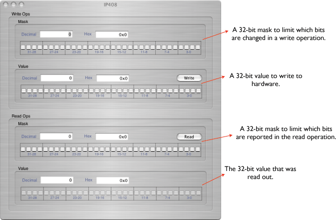

The IP408 provides 32 channels of digital I/O. Each channel can be used as an input or output. Outputs are always off upon power-up and are automatically cleared following a software reset. See the manufactor's documentation for more complete information. The IP408 object can only be placed onto an IP Carrier board. The configuration icon looks like this:
